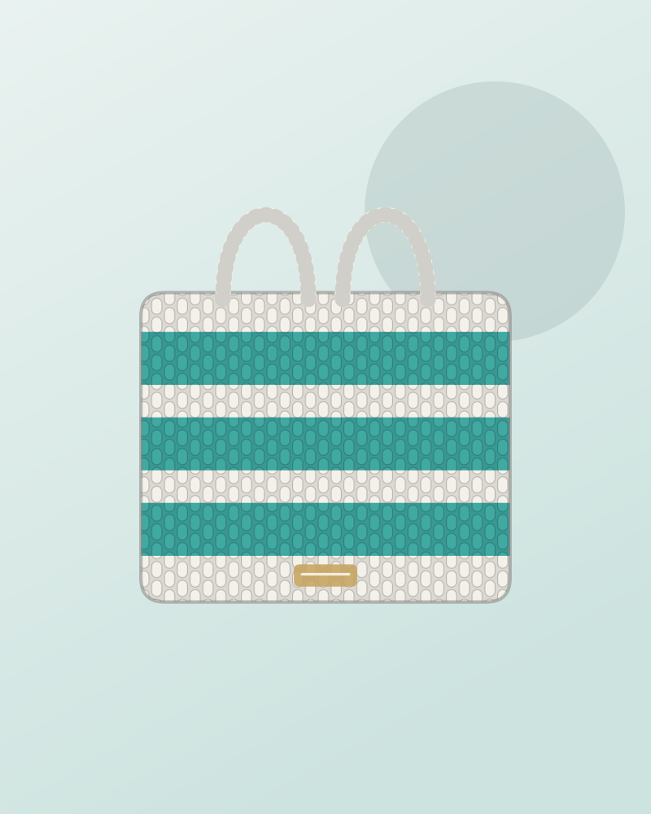
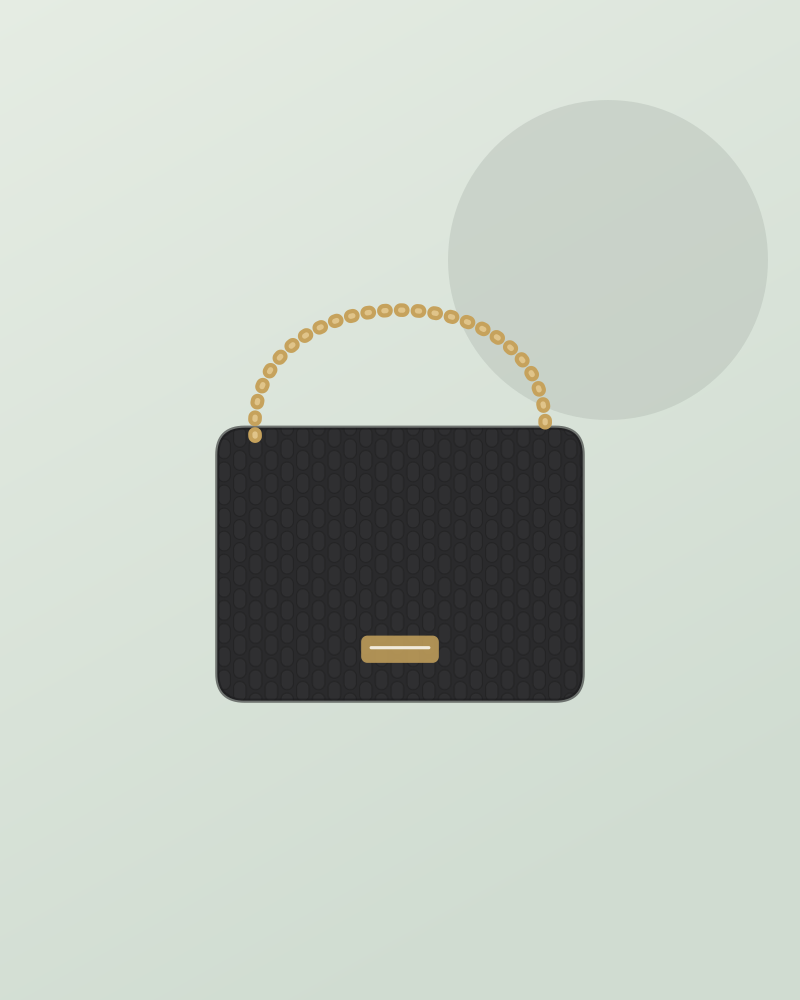
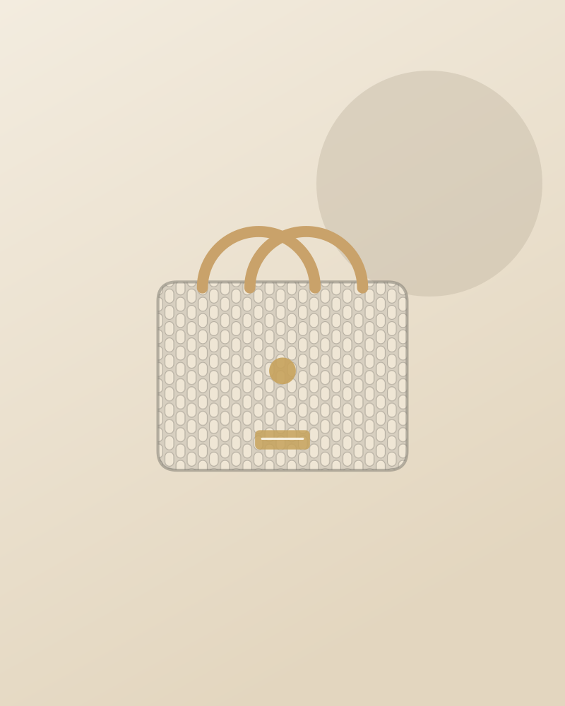
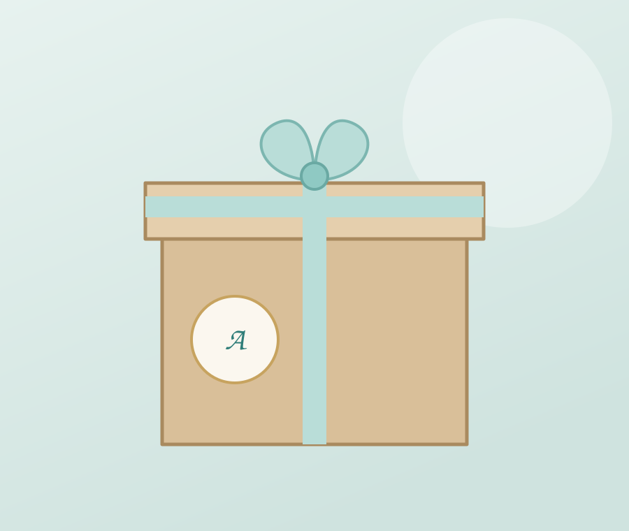
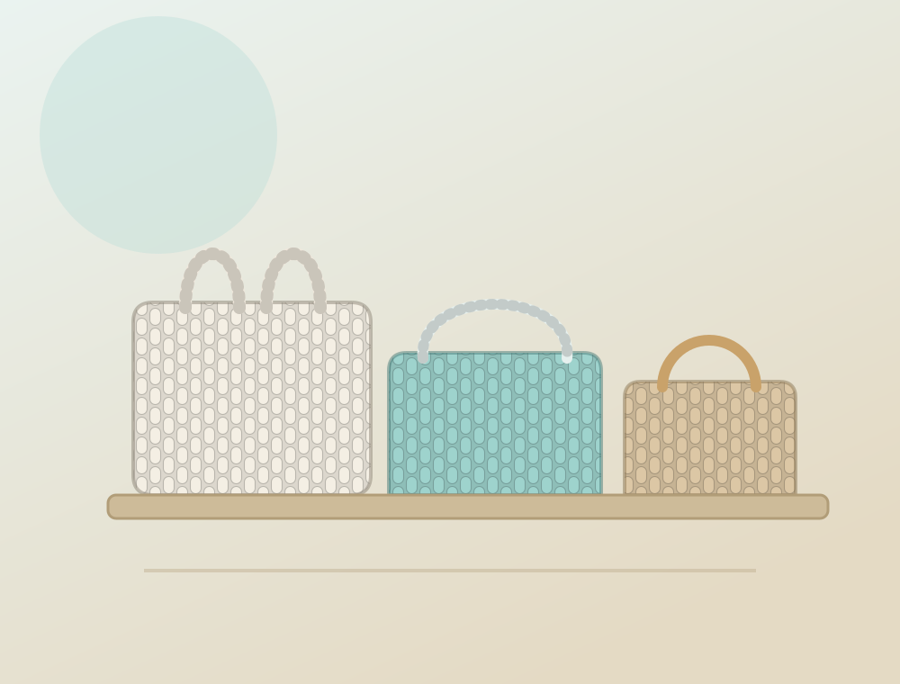

Favourite
Favourite
Shell Purse
DM for price
Handmade in Cyprus · Est. 2025
Anafi is named after a small island in Greece — a symbol of beauty, simplicity and authenticity. Every piece is 100% handmade, crafted with love and care to bring a touch of island charm into your life.

The bags
Every bag is made by hand, so no two come out exactly alike — and most can be made again in the colour you want. Send a message for prices and what's ready to go.
Favourite
DM for price

DM for price
 New
New
DM for price

DM for price

DM for price

DM for price

Summer pickDM for price

DM for price

DM for price
Nothing in this category right now — try another, or ask us on Instagram.
New pieces go up on Instagram first. Follow @anafi.bags_ →
A surprise made just for you
One box, packed by hand, never quite the same twice. Tell us a colour you love and leave the rest to us.
Every box is different. Every box is special.


Our story
Our brand is named after a small island in Greece, a symbol of beauty, simplicity and authenticity. Every product is 100% handmade, crafted with love and care to bring a touch of island charm into your life.
Anafi started in Cyprus in August 2025 and has been growing stitch by stitch ever since — at markets, at festivals, and in a lot of late evenings with a crochet hook. Something made just for you, because handmade isn't just a product, it's a story.
Kyriaki @kyriaki.hadjisolomi
How to order
Orders go through Instagram — no accounts, no checkout. Just tell us what you'd like.
Tell us which bag you like and the colours you're after. Screenshots are perfect.
We'll send the price, how long it'll take to make, and the delivery details for where you are.
Then it's crocheted by hand, packed with a little extra, and sent on its way to you.
Almost everything can be made again in a different yarn. Send us the shade you have in mind and we'll tell you what's possible.
Come and make one
A small-group session where you leave with a bag you made yourself. Yarn, hooks and all the help you need are provided — no experience necessary, beginners are genuinely welcome.
Reserve a spotWe bring the bags to markets and festivals around Cyprus through the summer — most recently the Seaside Street Food Festival in Trimiklini village. It's the best way to feel the yarn before you choose.
See what's nextLooking after it
Spot-clean by hand with cool water and a little mild soap. No machine, no tumble dryer — the stitches will thank you.
Press gently in a towel, reshape it while damp, and lay it flat to dry away from direct sun.
Fill it lightly with tissue so it keeps its shape, and store it flat rather than hanging by the handles.
Cotton yarn is tough. If a stitch ever catches, ease it back with a hook rather than pulling — or send it back to us.
Good to know
Every single one, 100%, crocheted by hand here in Cyprus. That also means small differences between bags of the same design — that's the handmade part, not a fault.
Usually yes. Send us the shade you have in mind and we'll tell you what we can get in that yarn. Custom colours take a little longer than something already made.
Prices depend on the size and how much yarn and time a piece takes, so we quote each one in the DM. There's also a price list saved in our Instagram highlights.
If it's already made, it goes out quickly. If we're making it for you, we'll give you a realistic date when you order — it depends on the design and how many are in the queue.
A handmade crochet bag, two to four little surprises, a brand goodie and a bit of extra joy — €30. No two boxes are packed the same.
Yes — "Crochet your own bag" runs in small groups, with everything provided and no experience needed. Message us to be told about the next date.
The full details are in the "Our policy" highlight on our Instagram profile, and we'll confirm everything with you in the DM before you pay anything.
Say hello
DM us on Instagram for prices, colours and orders — we answer every message.
DM for price
Ask about this bagOrders are taken by Instagram DM — we'll confirm the price, colour and timing with you.